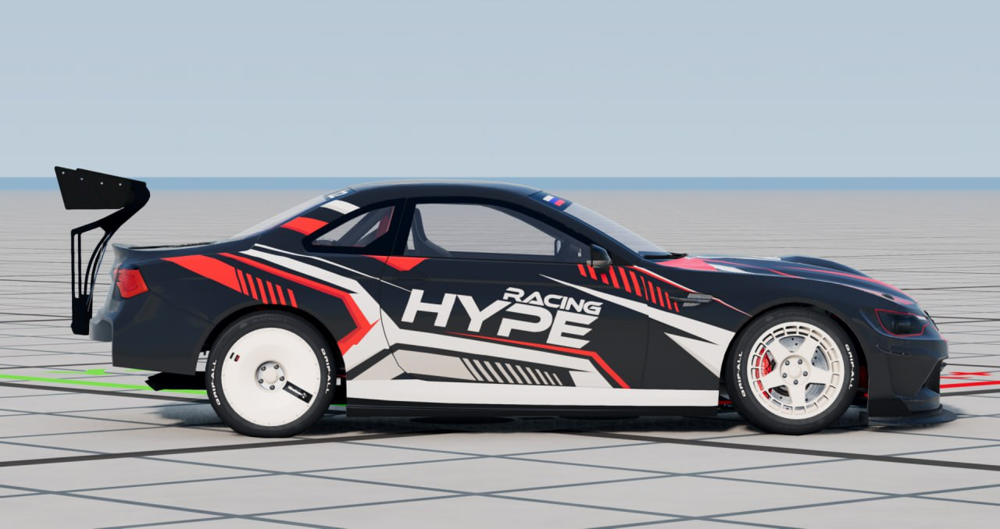

News 1
Моды для игры BeamNG Drive - это дополнительные файлы, которые позволяют расширить функционал и улучшить графику игры. Они созданы сообществом игроков и разработчиков и представляют собой различные модификации, добавляющие новые автомобили, карты, физику, звуки и другие элементы игрового процесса. С помощью модов можно создавать уникальные сценарии и экспериментировать с различными настройками, что делает игру еще более увлекательной и разнообразной. Кроме того, моды позволяют вносить изменения в уже существующие автомобили и карты, делая их более реалистичными и интересными.
